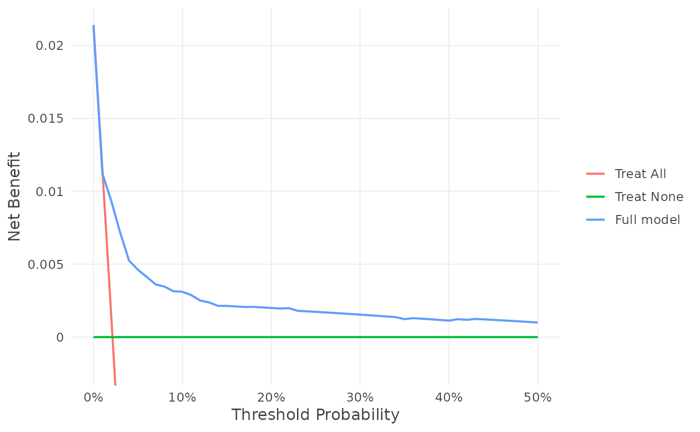
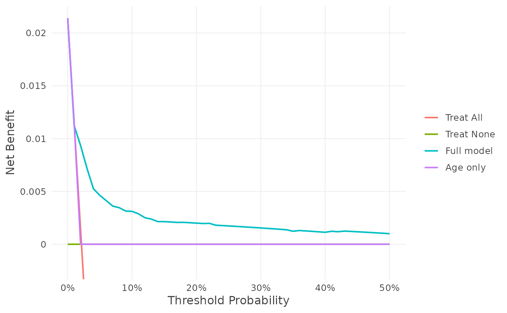
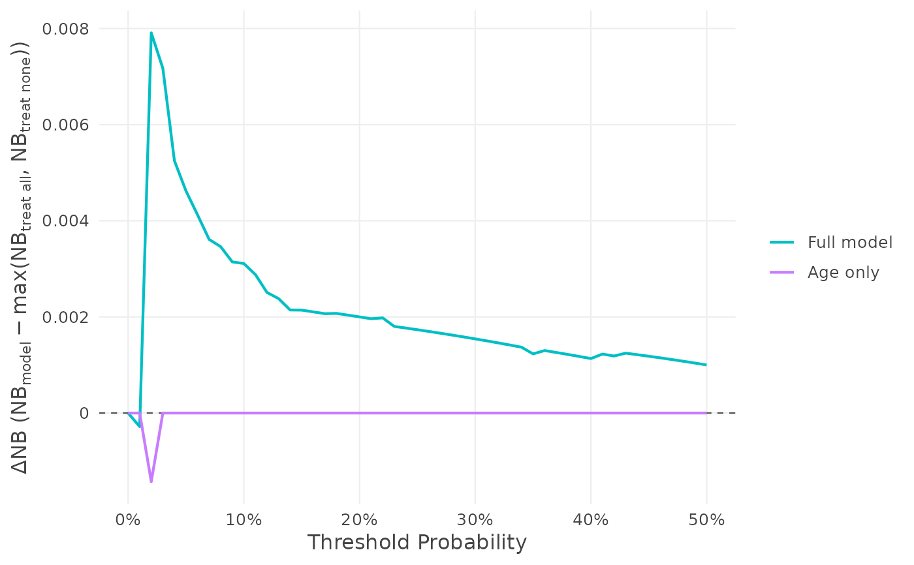
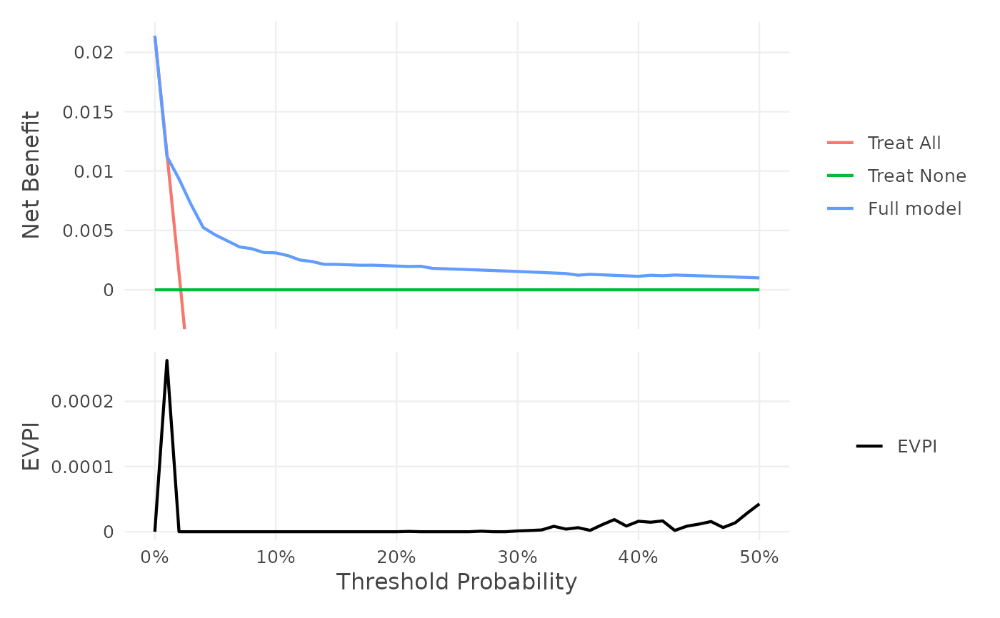

Plot decision curves
plot.voipred_nb.RdThe plot of results of nb_val(): the decision curve (type = "nb"), or the
difference in net benefit between each model and the best default strategy
(type = "delta"). A result of nb_val() with several models draws all of
them; several results are drawn together, combined as by
c().
Optionally, the expected value of perfect and sample information (from
evpi() and evsi()) is drawn in a panel below, on the same threshold
axis.
Usage
# S3 method for class 'voipred_nb'
plot(
x,
...,
type = c("nb", "delta", "subgroups", "region"),
labels = NULL,
evpi = NULL,
evsi = NULL,
colors = NULL,
per = getOption("voipred.per", 1),
bands = FALSE,
threshold = NULL,
model = NULL,
comparator = "Treat All",
k = NULL,
shares = NULL,
interactive = FALSE
)Arguments
- x
A result of
nb_val(), for one model or several.- ...
More results of
nb_val()to draw on the same plot. A result with one model given here with a name is labelled with its name.- type
"nb"(decision curve, default) or"delta"(\(\Delta NB\)); for a result with subgroups (nb_val(subgroup = )), also"subgroups"(the difference in net benefit againstcomparatorin each subgroup and in the population, across thresholds) and"region"(two subgroups: the inconsistency region of Wang et al. at onethreshold, with the boundary line from the subgroup sizes, the one fromkif given, and the observed point; its line gives the K-value).- labels
Optional names of the curves, one per model, in order; default: the models' labels.
- evpi, evsi
Optional results of
evpi()andevsi(), drawn in a panel below the decision curve: EVPI, and EVSI for each future sample size, against the threshold. The static version needs the patchwork package.- colors
Optional colours of the curves, instead of the defaults: named by label, e.g.
c(Full = "darkred", "Treat All" = "grey50")(any curve, including Treat All, Treat None and, withevpi/evsi, the EVPI and EVSI curves; the others keep their colours), or unnamed, one per model in order. Colour names or hex codes. By default, a model has the same colour in every plot of voipred.- per
Scale of the net benefit (and of EVPI and EVSI in the panel below): the number of patients it is expressed per. Default 1 (per patient); e.g.
per = 100000draws the net number of true positives per 100,000 patients, and the y axes say "(per 100,000 patients)". The default can be set withoptions(voipred.per = ).- bands
FALSE(default): the curves only.TRUE: also the credible intervals of the results (computed withnb_val(interval = )), as shaded bands around each model's curve (and Treat All in the decision curve), in the curves' colours; interactive plots then show the interval when hovering. Like every use of credible intervals,bands = TRUEwarns and recommends value-of-information analysis.- threshold, model
For
type = "region": the threshold (one of the result's), and the model (default: the first).For
type = "subgroups"and"region": as insummary.voipred_nb().- interactive
TRUEfor an interactive plot (needs the plotly package). DefaultFALSE.
Value
A ggplot object, a patchwork object (with evpi or evsi), or a
plotly widget (interactive = TRUE).
Details
type = "nb": the net benefit of each model, of treating everyone ("Treat All") and of treating no one ("Treat None"), against the threshold. The y-axis is shown from \(-0.1\pi\) to \(\pi\), with \(\pi\) the prevalence (risk by the horizon for survival outcomes), as in dcurves.type = "delta": \(\Delta NB = NB_{model} - \max(NB_{all}, NB_{none})\) (columndelta_NBof the estimates) of each model, with a dashed line at 0. Above 0 the model is better than both default strategies.
Results drawn together must come from the same data, outcome, horizon,
cause, censoring method, prior and thresholds (voipred checks this).
Thresholds where the net benefit is NA are left out. Each curve is named
by its label (see nb_val()), unless labels is given; a model has the same
colour in both types of plot.
The panel below shows EVPI (from evpi) and EVSI for each future sample
size (from evsi) against the threshold; without evpi, the EVPI of the
evsi result is drawn. (EVSI against the threshold is a voipred addition:
Sadatsafavi et al. (2025) plot EVSI against the future sample size, as
plot.voipred_evsi() does.)
The static plot is a ggplot object (a patchwork object with the
value-of-information panel): it is drawn when printed, and can be changed
with the usual + (e.g. + ggplot2::coord_cartesian(xlim = c(0, 0.5))) or
saved with ggplot2::ggsave(). With interactive = TRUE it is a plotly
widget: hovering shows the values of every curve at a threshold, the panels
zoom together, and clicking a legend entry hides or shows a curve; save it
with htmlwidgets::saveWidget().
Examples
df_dev_binary <- gusto[1:5000, ]
df_val_binary <- gusto[5001:10000, ]
fit1 <- glm(day30 ~ age + Killip + sysbp + pulse,
family = binomial, data = df_dev_binary)
df_val_binary$p1 <- predict(fit1, newdata = df_val_binary, type = "response")
fit2 <- glm(day30 ~ age, family = binomial, data = df_dev_binary)
df_val_binary$p2 <- predict(fit2, newdata = df_val_binary, type = "response")
z <- seq(0, 0.5, by = 0.01)
res1 <- nb_val(data = df_val_binary,
predicted_risk = df_val_binary$p1,
outcome = "day30",
thresholds = z,
label = "Full model")
res2 <- nb_val(data = df_val_binary,
predicted_risk = df_val_binary$p2,
outcome = "day30",
thresholds = z,
label = "Age only")
plot(res1)

plot(res1, res2)

plot(res1, res2, type = "delta")

# \donttest{
set.seed(1)
e <- evpi(res1, n_sim = 200)
if (requireNamespace("patchwork", quietly = TRUE)) plot(res1, evpi = e)

if (requireNamespace("plotly", quietly = TRUE)) plot(res1, evpi = e, interactive = TRUE)
# }